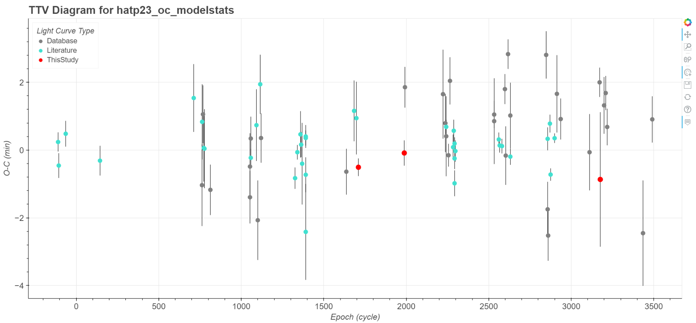
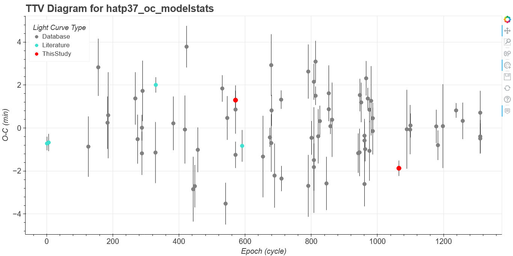
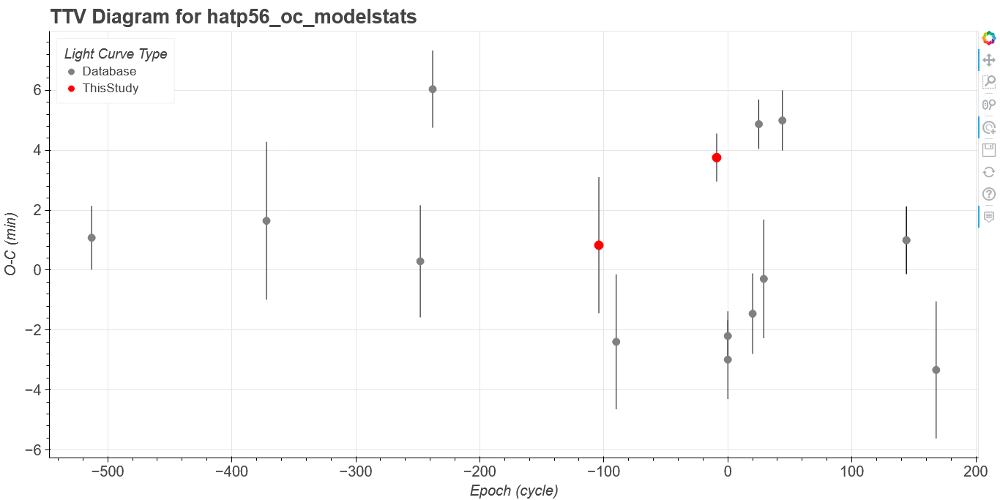
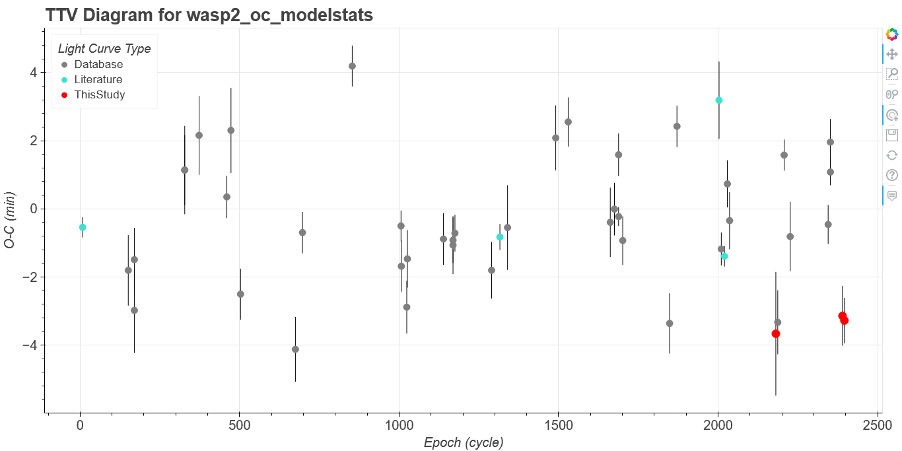
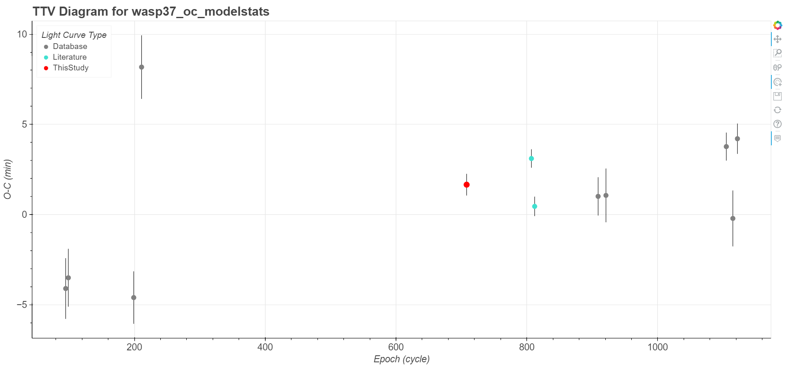
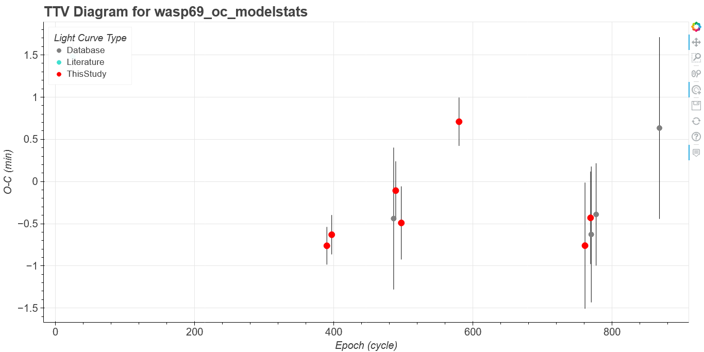
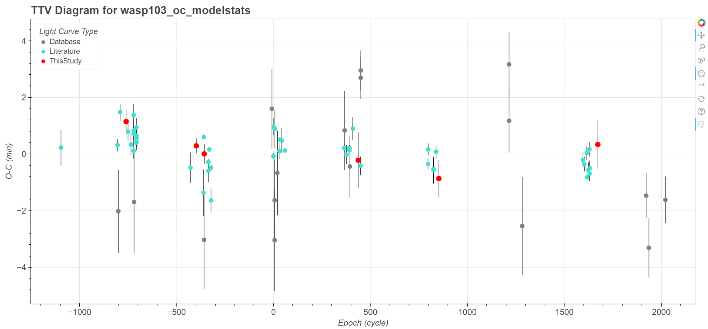

Click on the buttons inside the tabbed menu for details. The light curves from this study can be accessed by clicking on the corresponding data points in the TTV diagram. The data files are downloadable too.
Reference ephemeris information: T0 = 2456539.390497(040) BJD-TDB and Porb = 1.21288643(004) [days]
Click to View the TTV Diagram for HAT-P-23b

Download data files:
Reference ephemeris information: T0 = 2454424.747289(055) BJD-TDB and Porb = 2.15000831(005) [days]
Click to View the TTV Diagram for HAT-P-32b
Download data files:
Reference ephemeris information: T0 = 2457625.530538(056) BJD-TDB and Porb = 2.79744121(015) [days]
Click to View the TTV Diagram for HAT-P-37b

Download data files:
Reference ephemeris information: T0 = 2458822.558285(195) BJD-TDB and Porb = 2.79082643(116) [days]
Click to View the TTV Diagram for HAT-P-56b

Download data files:
Reference ephemeris information: T0 = 2456823.839482(062) BJD-TDB and Porb = 2.15222214(008) [days]
Click to View the TTV Diagram for WASP-2b

Download data files:
Reference ephemeris information: T0 = 2455632.578654(103) BJD-TDB and Porb = 2.24376644(022) [days]
Click to View the TTV Diagram for WASP-14b
Download data files:
Reference ephemeris information: T0 = 2458225.646784(161) BJD-TDB and Porb = 3.57747771(067) [days]
Click to View the TTV Diagram for WASP-37b

Download data files:
Reference ephemeris information: T0 = 2455845.538739(142) BJD-TDB and Porb = 3.86813577(032) [days]
Click to View the TTV Diagram for WASP-69b

Download data files:
Reference ephemeris information: T0 = 2457218.764573(056) BJD-TDB and Porb = 2.13775148(015) [days]
Click to View the TTV Diagram for WASP-74b
Download data files:
Reference ephemeris information: T0 = 2457511.944555(016) BJD-TDB and Porb = 0.92554549(003) [days]
Click to View the TTV Diagram for WASP-103b

Download data files: